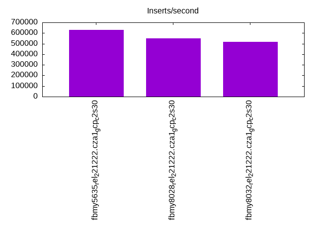
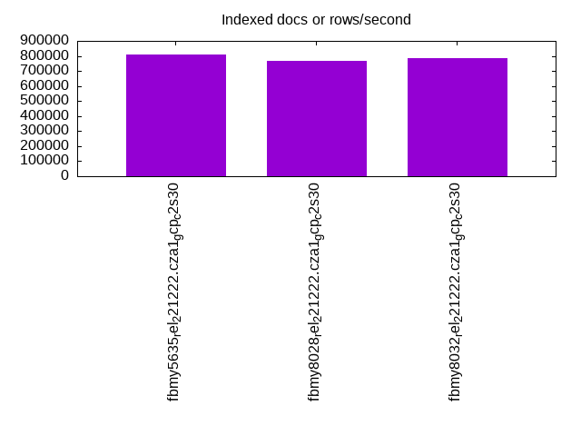
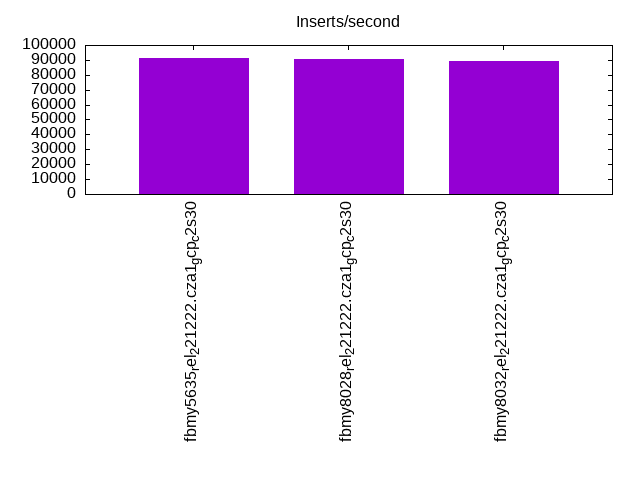
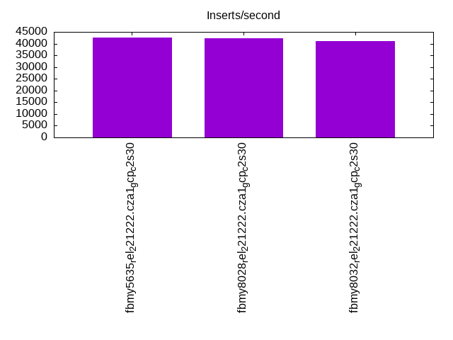
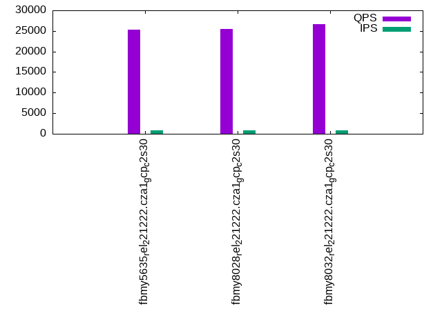
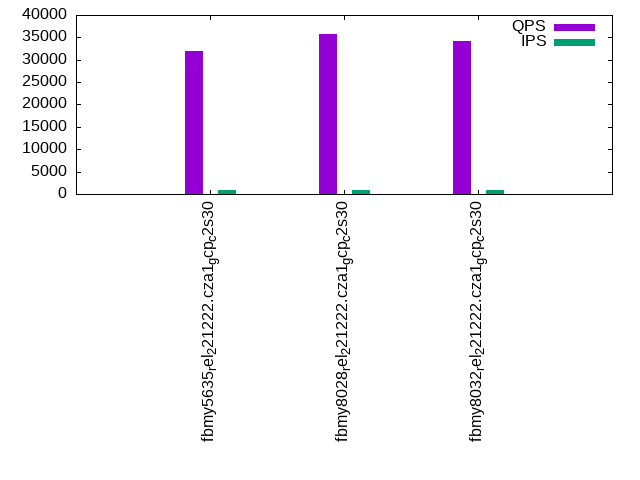
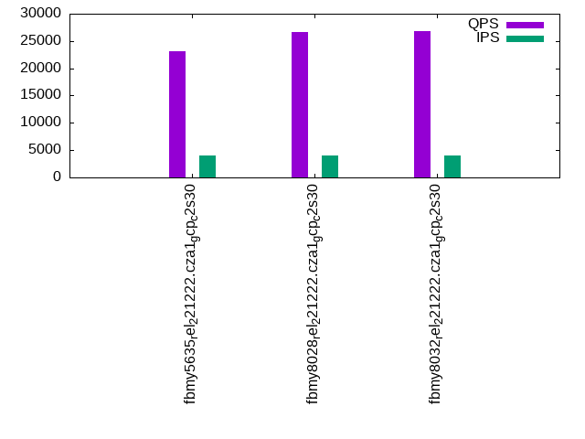
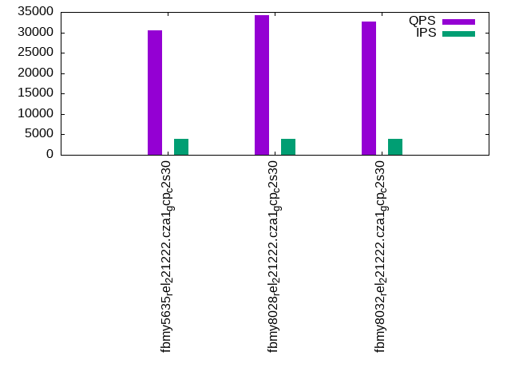
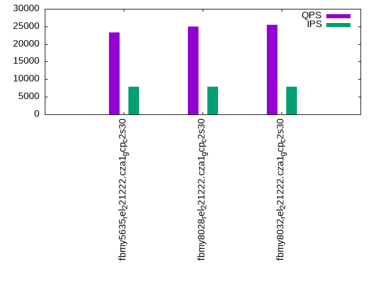
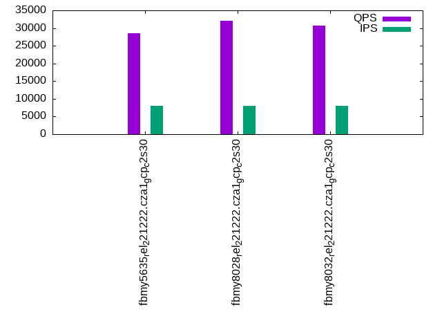

This is a report for the insert benchmark with 160M docs and 8 client(s). It is generated by scripts (bash, awk, sed) and Tufte might not be impressed. An overview of the insert benchmark is here and a short update is here. Below, by DBMS, I mean DBMS+version.config. An example is my8020.c10b40 where my means MySQL, 8020 is version 8.0.20 and c10b40 is the name for the configuration file.
The test server is a c2-standard-30 from GCP with 15 cores, hyperthreads disabled, Ubuntu 22.04 and XFS using SW RAID 0 over 4 local SSDs. The benchmark was run with 8 clients and there were 1, 2 or 3 connections per client. It uses 8 tables with a client per table. It loads 20M rows per table without secondary indexes, creates 3 secondary indexes per table, then inserts 50m+50m rows per table with a delete per insert to avoid growing the table. It then does 6 read+write tests for 1200s each that do queries as fast as possible with 100,100,500,500,1000,1000 inserts/s and the same for deletes/s per client concurrent with the queries. The database is cached in memory. Clients and the DBMS share one server. The per-database configs are in the per-database subdirectories here.
The tested DBMS are:
The numbers are inserts/s for l.i0, l.i1 and l.i2, indexed docs (or rows) /s for l.x and queries/s for qr100, qp100 thru qr1000, qp1000" The values are the average rate over the entire test for inserts (IPS) and queries (QPS). The range of values for IPS and QPS is split into 3 parts: bottom 25%, middle 50%, top 25%. Values in the bottom 25% have a red background, values in the top 25% have a green background and values in the middle have no color. A gray background is used for values that can be ignored because the DBMS did not sustain the target insert rate. Red backgrounds are not used when the minimum value is within 80% of the max value.
| dbms | l.i0 | l.x | l.i1 | l.i2 | qr100 | qp100 | qr500 | qp500 | qr1000 | qp1000 |
|---|---|---|---|---|---|---|---|---|---|---|
| fbmy5635_rel_221222.cza1_gcp_c2s30 | 629921 | 812183 | 91402 | 42508 | 25252 | 32006 | 23084 | 30582 | 23237 | 28627 |
| fbmy8028_rel_221222.cza1_gcp_c2s30 | 547945 | 765551 | 90446 | 42395 | 25421 | 35856 | 26636 | 34150 | 24914 | 32088 |
| fbmy8032_rel_221222.cza1_gcp_c2s30 | 517799 | 784314 | 89485 | 41026 | 26630 | 34269 | 26751 | 32625 | 25440 | 30619 |
This table has relative throughput, throughput for the DBMS relative to the DBMS in the first line, using the absolute throughput from the previous table. Values less than 0.95 have a yellow background. Values greater than 1.05 have a blue background.
| dbms | l.i0 | l.x | l.i1 | l.i2 | qr100 | qp100 | qr500 | qp500 | qr1000 | qp1000 |
|---|---|---|---|---|---|---|---|---|---|---|
| fbmy5635_rel_221222.cza1_gcp_c2s30 | 1.00 | 1.00 | 1.00 | 1.00 | 1.00 | 1.00 | 1.00 | 1.00 | 1.00 | 1.00 |
| fbmy8028_rel_221222.cza1_gcp_c2s30 | 0.87 | 0.94 | 0.99 | 1.00 | 1.01 | 1.12 | 1.15 | 1.12 | 1.07 | 1.12 |
| fbmy8032_rel_221222.cza1_gcp_c2s30 | 0.82 | 0.97 | 0.98 | 0.97 | 1.05 | 1.07 | 1.16 | 1.07 | 1.09 | 1.07 |
This lists the average rate of inserts/s for the tests that do inserts concurrent with queries. For such tests the query rate is listed in the table above. The read+write tests are setup so that the insert rate should match the target rate every second. Cells that are not at least 95% of the target have a red background to indicate a failure to satisfy the target.
| dbms | qr100.L1 | qp100.L2 | qr500.L3 | qp500.L4 | qr1000.L5 | qp1000.L6 |
|---|---|---|---|---|---|---|
| fbmy5635_rel_221222.cza1_gcp_c2s30 | 794 | 794 | 3967 | 3970 | 7947 | 7947 |
| fbmy8028_rel_221222.cza1_gcp_c2s30 | 794 | 794 | 3970 | 3970 | 7947 | 7947 |
| fbmy8032_rel_221222.cza1_gcp_c2s30 | 793 | 794 | 3970 | 3970 | 7947 | 7947 |
| target | 800 | 800 | 4000 | 4000 | 8000 | 8000 |
l.i0: load without secondary indexes. Graphs for performance per 1-second interval are here.
Average throughput:
Insert response time histogram: each cell has the percentage of responses that take <= the time in the header and max is the max response time in seconds. For the max column values in the top 25% of the range have a red background and in the bottom 25% of the range have a green background. The red background is not used when the min value is within 80% of the max value.
| dbms | 256us | 1ms | 4ms | 16ms | 64ms | 256ms | 1s | 4s | 16s | gt | max |
|---|---|---|---|---|---|---|---|---|---|---|---|
| fbmy5635_rel_221222.cza1_gcp_c2s30 | 35.814 | 64.156 | 0.014 | 0.002 | 0.012 | 0.002 | 0.376 | ||||
| fbmy8028_rel_221222.cza1_gcp_c2s30 | 8.674 | 91.188 | 0.115 | 0.007 | 0.013 | 0.004 | 0.326 | ||||
| fbmy8032_rel_221222.cza1_gcp_c2s30 | 3.894 | 95.965 | 0.121 | 0.004 | 0.014 | 0.003 | 0.383 |
Performance metrics for the DBMS listed above. Some are normalized by throughput, others are not. Legend for results is here.
ips qps rps rmbps wps wmbps rpq rkbpq wpi wkbpi csps cpups cspq cpupq dbgb1 dbgb2 rss maxop p50 p99 tag 629921 0 0 0.0 520.3 146.7 0.000 0.000 0.001 0.239 72194 73.2 0.115 17 4.7 6.2 1.3 0.376 83909 53740 fbmy5635_rel_221222.cza1_gcp_c2s30 547945 0 0 0.0 461.8 126.6 0.000 0.000 0.001 0.237 62995 73.1 0.115 20 4.7 6.4 1.6 0.326 73420 51544 fbmy8028_rel_221222.cza1_gcp_c2s30 517799 0 0 0.0 445.8 121.7 0.000 0.000 0.001 0.241 60620 72.5 0.117 21 4.6 6.3 1.7 0.383 70323 43952 fbmy8032_rel_221222.cza1_gcp_c2s30
l.x: create secondary indexes.
Average throughput:
Performance metrics for the DBMS listed above. Some are normalized by throughput, others are not. Legend for results is here.
ips qps rps rmbps wps wmbps rpq rkbpq wpi wkbpi csps cpups cspq cpupq dbgb1 dbgb2 rss maxop p50 p99 tag 812183 0 1 0.1 306.5 110.6 0.000 0.000 0.000 0.139 1098 50.0 0.001 9 10.5 12.0 11.3 0.002 NA NA fbmy5635_rel_221222.cza1_gcp_c2s30 765551 0 1 0.1 284.1 107.7 0.000 0.000 0.000 0.144 1331 50.1 0.002 10 10.5 12.2 12.9 0.003 NA NA fbmy8028_rel_221222.cza1_gcp_c2s30 784314 0 1 0.1 291.0 109.9 0.000 0.000 0.000 0.144 1842 50.4 0.002 10 10.4 12.1 13.0 0.003 NA NA fbmy8032_rel_221222.cza1_gcp_c2s30
l.i1: continue load after secondary indexes created with 50 inserts per transaction. Graphs for performance per 1-second interval are here.
Average throughput:
Insert response time histogram: each cell has the percentage of responses that take <= the time in the header and max is the max response time in seconds. For the max column values in the top 25% of the range have a red background and in the bottom 25% of the range have a green background. The red background is not used when the min value is within 80% of the max value.
| dbms | 256us | 1ms | 4ms | 16ms | 64ms | 256ms | 1s | 4s | 16s | gt | max |
|---|---|---|---|---|---|---|---|---|---|---|---|
| fbmy5635_rel_221222.cza1_gcp_c2s30 | 0.032 | 39.334 | 60.514 | 0.104 | 0.010 | 0.005 | 0.419 | ||||
| fbmy8028_rel_221222.cza1_gcp_c2s30 | 0.011 | 37.474 | 62.391 | 0.103 | 0.015 | 0.005 | 0.638 | ||||
| fbmy8032_rel_221222.cza1_gcp_c2s30 | 0.012 | 35.979 | 63.886 | 0.104 | 0.015 | 0.004 | 0.567 |
Delete response time histogram: each cell has the percentage of responses that take <= the time in the header and max is the max response time in seconds. For the max column values in the top 25% of the range have a red background and in the bottom 25% of the range have a green background. The red background is not used when the min value is within 80% of the max value.
| dbms | 256us | 1ms | 4ms | 16ms | 64ms | 256ms | 1s | 4s | 16s | gt | max |
|---|---|---|---|---|---|---|---|---|---|---|---|
| fbmy5635_rel_221222.cza1_gcp_c2s30 | 0.032 | 39.649 | 60.198 | 0.106 | 0.010 | 0.005 | 0.418 | ||||
| fbmy8028_rel_221222.cza1_gcp_c2s30 | 0.020 | 40.681 | 59.181 | 0.098 | 0.015 | 0.005 | 0.635 | ||||
| fbmy8032_rel_221222.cza1_gcp_c2s30 | 0.013 | 38.353 | 61.513 | 0.102 | 0.015 | 0.004 | 0.566 |
Performance metrics for the DBMS listed above. Some are normalized by throughput, others are not. Legend for results is here.
ips qps rps rmbps wps wmbps rpq rkbpq wpi wkbpi csps cpups cspq cpupq dbgb1 dbgb2 rss maxop p50 p99 tag 91402 0 4 0.4 572.4 169.2 0.000 0.004 0.006 1.896 60332 60.7 0.660 100 15.4 15.9 50.2 0.419 11641 8491 fbmy5635_rel_221222.cza1_gcp_c2s30 90446 0 4 0.4 589.3 165.4 0.000 0.004 0.007 1.873 54752 64.2 0.605 106 13.3 13.9 50.5 0.638 11438 8041 fbmy8028_rel_221222.cza1_gcp_c2s30 89485 0 4 0.4 574.0 162.9 0.000 0.004 0.006 1.864 54201 64.7 0.606 108 12.9 13.5 51.5 0.567 11341 8191 fbmy8032_rel_221222.cza1_gcp_c2s30
l.i2: continue load after secondary indexes created with 5 inserts per transaction. Graphs for performance per 1-second interval are here.
Average throughput:
Insert response time histogram: each cell has the percentage of responses that take <= the time in the header and max is the max response time in seconds. For the max column values in the top 25% of the range have a red background and in the bottom 25% of the range have a green background. The red background is not used when the min value is within 80% of the max value.
| dbms | 256us | 1ms | 4ms | 16ms | 64ms | 256ms | 1s | 4s | 16s | gt | max |
|---|---|---|---|---|---|---|---|---|---|---|---|
| fbmy5635_rel_221222.cza1_gcp_c2s30 | 0.158 | 87.555 | 12.246 | 0.037 | 0.004 | 0.063 | |||||
| fbmy8028_rel_221222.cza1_gcp_c2s30 | 0.016 | 82.282 | 17.592 | 0.104 | 0.003 | 0.002 | nonzero | 0.325 | |||
| fbmy8032_rel_221222.cza1_gcp_c2s30 | 0.002 | 78.661 | 21.218 | 0.114 | 0.003 | 0.002 | nonzero | 0.704 |
Delete response time histogram: each cell has the percentage of responses that take <= the time in the header and max is the max response time in seconds. For the max column values in the top 25% of the range have a red background and in the bottom 25% of the range have a green background. The red background is not used when the min value is within 80% of the max value.
| dbms | 256us | 1ms | 4ms | 16ms | 64ms | 256ms | 1s | 4s | 16s | gt | max |
|---|---|---|---|---|---|---|---|---|---|---|---|
| fbmy5635_rel_221222.cza1_gcp_c2s30 | nonzero | 72.550 | 27.404 | 0.041 | 0.005 | 0.061 | |||||
| fbmy8028_rel_221222.cza1_gcp_c2s30 | nonzero | 75.137 | 24.749 | 0.108 | 0.003 | 0.003 | nonzero | 0.325 | |||
| fbmy8032_rel_221222.cza1_gcp_c2s30 | 70.729 | 29.149 | 0.117 | 0.003 | 0.002 | nonzero | 0.704 |
Performance metrics for the DBMS listed above. Some are normalized by throughput, others are not. Legend for results is here.
ips qps rps rmbps wps wmbps rpq rkbpq wpi wkbpi csps cpups cspq cpupq dbgb1 dbgb2 rss maxop p50 p99 tag 42508 0 0 0.0 316.3 70.0 0.000 0.000 0.007 1.687 255428 64.9 6.009 229 12.0 12.1 61.7 0.063 5501 3351 fbmy5635_rel_221222.cza1_gcp_c2s30 42395 0 0 0.0 330.9 74.4 0.000 0.000 0.008 1.797 230357 68.6 5.434 243 12.3 12.6 62.2 0.325 5574 3191 fbmy8028_rel_221222.cza1_gcp_c2s30 41026 0 0 0.0 320.5 70.7 0.000 0.000 0.008 1.766 222150 68.7 5.415 251 11.8 12.1 62.4 0.704 5379 3082 fbmy8032_rel_221222.cza1_gcp_c2s30
qr100.L1: range queries with 100 insert/s per client. Graphs for performance per 1-second interval are here.
Average throughput:
Query response time histogram: each cell has the percentage of responses that take <= the time in the header and max is the max response time in seconds. For max values in the top 25% of the range have a red background and in the bottom 25% of the range have a green background. The red background is not used when the min value is within 80% of the max value.
| dbms | 256us | 1ms | 4ms | 16ms | 64ms | 256ms | 1s | 4s | 16s | gt | max |
|---|---|---|---|---|---|---|---|---|---|---|---|
| fbmy5635_rel_221222.cza1_gcp_c2s30 | 68.239 | 30.083 | 1.678 | nonzero | nonzero | 0.050 | |||||
| fbmy8028_rel_221222.cza1_gcp_c2s30 | 77.126 | 18.201 | 4.673 | nonzero | nonzero | 0.054 | |||||
| fbmy8032_rel_221222.cza1_gcp_c2s30 | 70.839 | 28.403 | 0.758 | nonzero | nonzero | 0.051 |
Insert response time histogram: each cell has the percentage of responses that take <= the time in the header and max is the max response time in seconds. For max values in the top 25% of the range have a red background and in the bottom 25% of the range have a green background. The red background is not used when the min value is within 80% of the max value.
| dbms | 256us | 1ms | 4ms | 16ms | 64ms | 256ms | 1s | 4s | 16s | gt | max |
|---|---|---|---|---|---|---|---|---|---|---|---|
| fbmy5635_rel_221222.cza1_gcp_c2s30 | 9.234 | 90.766 | 0.003 | ||||||||
| fbmy8028_rel_221222.cza1_gcp_c2s30 | 5.557 | 94.438 | 0.005 | 0.004 | |||||||
| fbmy8032_rel_221222.cza1_gcp_c2s30 | 0.500 | 99.099 | 0.401 | 0.006 |
Delete response time histogram: each cell has the percentage of responses that take <= the time in the header and max is the max response time in seconds. For max values in the top 25% of the range have a red background and in the bottom 25% of the range have a green background. The red background is not used when the min value is within 80% of the max value.
| dbms | 256us | 1ms | 4ms | 16ms | 64ms | 256ms | 1s | 4s | 16s | gt | max |
|---|---|---|---|---|---|---|---|---|---|---|---|
| fbmy5635_rel_221222.cza1_gcp_c2s30 | 11.474 | 88.521 | 0.005 | 0.005 | |||||||
| fbmy8028_rel_221222.cza1_gcp_c2s30 | 19.229 | 80.771 | 0.002 | ||||||||
| fbmy8032_rel_221222.cza1_gcp_c2s30 | 3.646 | 96.094 | 0.260 | 0.005 |
Performance metrics for the DBMS listed above. Some are normalized by throughput, others are not. Legend for results is here.
ips qps rps rmbps wps wmbps rpq rkbpq wpi wkbpi csps cpups cspq cpupq dbgb1 dbgb2 rss maxop p50 p99 tag 794 25252 0 0.0 15.3 3.4 0.000 0.000 0.019 4.386 97869 52.8 3.876 314 11.4 11.6 63.2 0.050 4219 3900 fbmy5635_rel_221222.cza1_gcp_c2s30 794 25421 0 0.0 19.7 4.5 0.000 0.000 0.025 5.760 98445 53.4 3.873 315 11.4 11.8 64.0 0.054 2558 2333 fbmy8028_rel_221222.cza1_gcp_c2s30 793 26630 0 0.0 15.0 3.2 0.000 0.000 0.019 4.072 103061 53.5 3.870 301 11.4 11.8 63.8 0.051 3708 3388 fbmy8032_rel_221222.cza1_gcp_c2s30
qp100.L2: point queries with 100 insert/s per client. Graphs for performance per 1-second interval are here.
Average throughput:
Query response time histogram: each cell has the percentage of responses that take <= the time in the header and max is the max response time in seconds. For max values in the top 25% of the range have a red background and in the bottom 25% of the range have a green background. The red background is not used when the min value is within 80% of the max value.
| dbms | 256us | 1ms | 4ms | 16ms | 64ms | 256ms | 1s | 4s | 16s | gt | max |
|---|---|---|---|---|---|---|---|---|---|---|---|
| fbmy5635_rel_221222.cza1_gcp_c2s30 | 87.803 | 12.196 | 0.001 | 0.001 | nonzero | 0.024 | |||||
| fbmy8028_rel_221222.cza1_gcp_c2s30 | 96.590 | 3.409 | 0.001 | nonzero | nonzero | 0.031 | |||||
| fbmy8032_rel_221222.cza1_gcp_c2s30 | 95.090 | 4.909 | 0.001 | nonzero | nonzero | 0.028 |
Insert response time histogram: each cell has the percentage of responses that take <= the time in the header and max is the max response time in seconds. For max values in the top 25% of the range have a red background and in the bottom 25% of the range have a green background. The red background is not used when the min value is within 80% of the max value.
| dbms | 256us | 1ms | 4ms | 16ms | 64ms | 256ms | 1s | 4s | 16s | gt | max |
|---|---|---|---|---|---|---|---|---|---|---|---|
| fbmy5635_rel_221222.cza1_gcp_c2s30 | 2.047 | 92.724 | 5.224 | 0.005 | 0.016 | ||||||
| fbmy8028_rel_221222.cza1_gcp_c2s30 | 0.365 | 95.536 | 4.099 | 0.012 | |||||||
| fbmy8032_rel_221222.cza1_gcp_c2s30 | 0.188 | 98.812 | 0.990 | 0.010 | 0.016 |
Delete response time histogram: each cell has the percentage of responses that take <= the time in the header and max is the max response time in seconds. For max values in the top 25% of the range have a red background and in the bottom 25% of the range have a green background. The red background is not used when the min value is within 80% of the max value.
| dbms | 256us | 1ms | 4ms | 16ms | 64ms | 256ms | 1s | 4s | 16s | gt | max |
|---|---|---|---|---|---|---|---|---|---|---|---|
| fbmy5635_rel_221222.cza1_gcp_c2s30 | 3.312 | 92.021 | 4.661 | 0.005 | 0.016 | ||||||
| fbmy8028_rel_221222.cza1_gcp_c2s30 | 3.620 | 93.089 | 3.292 | 0.011 | |||||||
| fbmy8032_rel_221222.cza1_gcp_c2s30 | 3.000 | 96.161 | 0.823 | 0.016 | 0.016 |
Performance metrics for the DBMS listed above. Some are normalized by throughput, others are not. Legend for results is here.
ips qps rps rmbps wps wmbps rpq rkbpq wpi wkbpi csps cpups cspq cpupq dbgb1 dbgb2 rss maxop p50 p99 tag 794 32006 0 0.0 13.7 3.5 0.000 0.000 0.017 4.460 132325 53.4 4.134 250 11.4 11.8 74.3 0.024 4060 3484 fbmy5635_rel_221222.cza1_gcp_c2s30 794 35856 0 0.0 13.9 3.8 0.000 0.000 0.018 4.919 147622 54.2 4.117 227 11.4 12.1 74.8 0.031 4539 3820 fbmy8028_rel_221222.cza1_gcp_c2s30 794 34269 0 0.0 12.4 3.2 0.000 0.000 0.016 4.154 140576 53.9 4.102 236 11.4 12.1 74.3 0.028 4317 3741 fbmy8032_rel_221222.cza1_gcp_c2s30
qr500.L3: range queries with 500 insert/s per client. Graphs for performance per 1-second interval are here.
Average throughput:
Query response time histogram: each cell has the percentage of responses that take <= the time in the header and max is the max response time in seconds. For max values in the top 25% of the range have a red background and in the bottom 25% of the range have a green background. The red background is not used when the min value is within 80% of the max value.
| dbms | 256us | 1ms | 4ms | 16ms | 64ms | 256ms | 1s | 4s | 16s | gt | max |
|---|---|---|---|---|---|---|---|---|---|---|---|
| fbmy5635_rel_221222.cza1_gcp_c2s30 | 66.457 | 29.734 | 3.808 | 0.001 | nonzero | nonzero | 0.071 | ||||
| fbmy8028_rel_221222.cza1_gcp_c2s30 | 70.097 | 25.854 | 4.049 | 0.001 | nonzero | nonzero | 0.071 | ||||
| fbmy8032_rel_221222.cza1_gcp_c2s30 | 69.567 | 27.612 | 2.820 | 0.001 | nonzero | nonzero | 0.071 |
Insert response time histogram: each cell has the percentage of responses that take <= the time in the header and max is the max response time in seconds. For max values in the top 25% of the range have a red background and in the bottom 25% of the range have a green background. The red background is not used when the min value is within 80% of the max value.
| dbms | 256us | 1ms | 4ms | 16ms | 64ms | 256ms | 1s | 4s | 16s | gt | max |
|---|---|---|---|---|---|---|---|---|---|---|---|
| fbmy5635_rel_221222.cza1_gcp_c2s30 | 1.245 | 50.659 | 48.038 | 0.058 | 0.023 | ||||||
| fbmy8028_rel_221222.cza1_gcp_c2s30 | 2.704 | 77.366 | 19.903 | 0.027 | 0.021 | ||||||
| fbmy8032_rel_221222.cza1_gcp_c2s30 | 0.427 | 73.367 | 26.168 | 0.039 | 0.024 |
Delete response time histogram: each cell has the percentage of responses that take <= the time in the header and max is the max response time in seconds. For max values in the top 25% of the range have a red background and in the bottom 25% of the range have a green background. The red background is not used when the min value is within 80% of the max value.
| dbms | 256us | 1ms | 4ms | 16ms | 64ms | 256ms | 1s | 4s | 16s | gt | max |
|---|---|---|---|---|---|---|---|---|---|---|---|
| fbmy5635_rel_221222.cza1_gcp_c2s30 | 1.434 | 51.243 | 47.269 | 0.054 | 0.025 | ||||||
| fbmy8028_rel_221222.cza1_gcp_c2s30 | 6.401 | 74.954 | 18.616 | 0.028 | 0.001 | 0.069 | |||||
| fbmy8032_rel_221222.cza1_gcp_c2s30 | 1.861 | 73.093 | 25.010 | 0.035 | 0.023 |
Performance metrics for the DBMS listed above. Some are normalized by throughput, others are not. Legend for results is here.
ips qps rps rmbps wps wmbps rpq rkbpq wpi wkbpi csps cpups cspq cpupq dbgb1 dbgb2 rss maxop p50 p99 tag 3967 23084 0 0.0 57.7 18.4 0.000 0.000 0.015 4.760 90445 56.3 3.918 366 11.4 12.9 78.9 0.071 3246 2845 fbmy5635_rel_221222.cza1_gcp_c2s30 3970 26636 0 0.0 59.4 19.2 0.000 0.000 0.015 4.948 103838 57.0 3.898 321 11.4 13.0 79.5 0.071 3724 3228 fbmy8028_rel_221222.cza1_gcp_c2s30 3970 26751 0 0.0 55.5 17.6 0.000 0.000 0.014 4.529 104103 56.9 3.892 319 11.4 13.1 79.2 0.071 3772 3085 fbmy8032_rel_221222.cza1_gcp_c2s30
qp500.L4: point queries with 500 insert/s per client. Graphs for performance per 1-second interval are here.
Average throughput:
Query response time histogram: each cell has the percentage of responses that take <= the time in the header and max is the max response time in seconds. For max values in the top 25% of the range have a red background and in the bottom 25% of the range have a green background. The red background is not used when the min value is within 80% of the max value.
| dbms | 256us | 1ms | 4ms | 16ms | 64ms | 256ms | 1s | 4s | 16s | gt | max |
|---|---|---|---|---|---|---|---|---|---|---|---|
| fbmy5635_rel_221222.cza1_gcp_c2s30 | 73.029 | 26.959 | 0.011 | nonzero | 0.016 | ||||||
| fbmy8028_rel_221222.cza1_gcp_c2s30 | 91.719 | 8.271 | 0.010 | nonzero | nonzero | 0.026 | |||||
| fbmy8032_rel_221222.cza1_gcp_c2s30 | 87.499 | 12.490 | 0.011 | nonzero | 0.016 |
Insert response time histogram: each cell has the percentage of responses that take <= the time in the header and max is the max response time in seconds. For max values in the top 25% of the range have a red background and in the bottom 25% of the range have a green background. The red background is not used when the min value is within 80% of the max value.
| dbms | 256us | 1ms | 4ms | 16ms | 64ms | 256ms | 1s | 4s | 16s | gt | max |
|---|---|---|---|---|---|---|---|---|---|---|---|
| fbmy5635_rel_221222.cza1_gcp_c2s30 | 1.061 | 51.491 | 47.402 | 0.046 | 0.024 | ||||||
| fbmy8028_rel_221222.cza1_gcp_c2s30 | 0.843 | 74.628 | 24.512 | 0.017 | 0.019 | ||||||
| fbmy8032_rel_221222.cza1_gcp_c2s30 | 0.132 | 78.181 | 21.663 | 0.024 | 0.031 |
Delete response time histogram: each cell has the percentage of responses that take <= the time in the header and max is the max response time in seconds. For max values in the top 25% of the range have a red background and in the bottom 25% of the range have a green background. The red background is not used when the min value is within 80% of the max value.
| dbms | 256us | 1ms | 4ms | 16ms | 64ms | 256ms | 1s | 4s | 16s | gt | max |
|---|---|---|---|---|---|---|---|---|---|---|---|
| fbmy5635_rel_221222.cza1_gcp_c2s30 | 1.504 | 52.536 | 45.920 | 0.040 | 0.023 | ||||||
| fbmy8028_rel_221222.cza1_gcp_c2s30 | 3.862 | 72.939 | 23.180 | 0.019 | 0.019 | ||||||
| fbmy8032_rel_221222.cza1_gcp_c2s30 | 1.361 | 78.329 | 20.289 | 0.021 | 0.029 |
Performance metrics for the DBMS listed above. Some are normalized by throughput, others are not. Legend for results is here.
ips qps rps rmbps wps wmbps rpq rkbpq wpi wkbpi csps cpups cspq cpupq dbgb1 dbgb2 rss maxop p50 p99 tag 3970 30582 0 0.0 60.6 17.0 0.000 0.000 0.015 4.381 130009 56.8 4.251 279 11.6 12.1 80.2 0.016 3916 3404 fbmy5635_rel_221222.cza1_gcp_c2s30 3970 34150 0 0.0 60.9 18.8 0.000 0.000 0.015 4.845 143903 57.5 4.214 253 11.5 12.3 81.6 0.026 4363 3868 fbmy8028_rel_221222.cza1_gcp_c2s30 3970 32625 0 0.0 62.1 18.3 0.000 0.000 0.016 4.719 136727 57.6 4.191 265 11.6 12.3 81.7 0.016 4171 3676 fbmy8032_rel_221222.cza1_gcp_c2s30
qr1000.L5: range queries with 1000 insert/s per client. Graphs for performance per 1-second interval are here.
Average throughput:
Query response time histogram: each cell has the percentage of responses that take <= the time in the header and max is the max response time in seconds. For max values in the top 25% of the range have a red background and in the bottom 25% of the range have a green background. The red background is not used when the min value is within 80% of the max value.
| dbms | 256us | 1ms | 4ms | 16ms | 64ms | 256ms | 1s | 4s | 16s | gt | max |
|---|---|---|---|---|---|---|---|---|---|---|---|
| fbmy5635_rel_221222.cza1_gcp_c2s30 | 63.175 | 34.507 | 2.317 | 0.001 | nonzero | nonzero | 0.074 | ||||
| fbmy8028_rel_221222.cza1_gcp_c2s30 | 68.268 | 29.616 | 2.114 | 0.001 | nonzero | nonzero | 0.075 | ||||
| fbmy8032_rel_221222.cza1_gcp_c2s30 | 68.965 | 28.892 | 2.142 | 0.001 | nonzero | nonzero | 0.066 |
Insert response time histogram: each cell has the percentage of responses that take <= the time in the header and max is the max response time in seconds. For max values in the top 25% of the range have a red background and in the bottom 25% of the range have a green background. The red background is not used when the min value is within 80% of the max value.
| dbms | 256us | 1ms | 4ms | 16ms | 64ms | 256ms | 1s | 4s | 16s | gt | max |
|---|---|---|---|---|---|---|---|---|---|---|---|
| fbmy5635_rel_221222.cza1_gcp_c2s30 | 1.060 | 47.108 | 51.774 | 0.057 | 0.035 | ||||||
| fbmy8028_rel_221222.cza1_gcp_c2s30 | 0.242 | 55.267 | 44.439 | 0.052 | 0.027 | ||||||
| fbmy8032_rel_221222.cza1_gcp_c2s30 | 0.076 | 57.086 | 42.778 | 0.060 | 0.038 |
Delete response time histogram: each cell has the percentage of responses that take <= the time in the header and max is the max response time in seconds. For max values in the top 25% of the range have a red background and in the bottom 25% of the range have a green background. The red background is not used when the min value is within 80% of the max value.
| dbms | 256us | 1ms | 4ms | 16ms | 64ms | 256ms | 1s | 4s | 16s | gt | max |
|---|---|---|---|---|---|---|---|---|---|---|---|
| fbmy5635_rel_221222.cza1_gcp_c2s30 | 1.144 | 47.918 | 50.885 | 0.053 | 0.038 | ||||||
| fbmy8028_rel_221222.cza1_gcp_c2s30 | 1.397 | 55.761 | 42.796 | 0.045 | 0.001 | 0.072 | |||||
| fbmy8032_rel_221222.cza1_gcp_c2s30 | 0.570 | 58.489 | 40.879 | 0.062 | 0.059 |
Performance metrics for the DBMS listed above. Some are normalized by throughput, others are not. Legend for results is here.
ips qps rps rmbps wps wmbps rpq rkbpq wpi wkbpi csps cpups cspq cpupq dbgb1 dbgb2 rss maxop p50 p99 tag 7947 23237 0 0.0 117.8 31.9 0.000 0.000 0.015 4.115 91601 60.4 3.942 390 12.2 12.8 80.5 0.074 3198 2429 fbmy5635_rel_221222.cza1_gcp_c2s30 7947 24914 0 0.0 117.8 34.3 0.000 0.000 0.015 4.413 97655 61.1 3.920 368 12.1 13.0 81.9 0.075 3374 2701 fbmy8028_rel_221222.cza1_gcp_c2s30 7947 25440 0 0.0 118.7 33.8 0.000 0.000 0.015 4.356 99211 61.3 3.900 361 12.1 13.0 82.0 0.066 2973 2381 fbmy8032_rel_221222.cza1_gcp_c2s30
qp1000.L6: point queries with 1000 insert/s per client. Graphs for performance per 1-second interval are here.
Average throughput:
Query response time histogram: each cell has the percentage of responses that take <= the time in the header and max is the max response time in seconds. For max values in the top 25% of the range have a red background and in the bottom 25% of the range have a green background. The red background is not used when the min value is within 80% of the max value.
| dbms | 256us | 1ms | 4ms | 16ms | 64ms | 256ms | 1s | 4s | 16s | gt | max |
|---|---|---|---|---|---|---|---|---|---|---|---|
| fbmy5635_rel_221222.cza1_gcp_c2s30 | 49.052 | 50.905 | 0.041 | 0.001 | 0.001 | 0.040 | |||||
| fbmy8028_rel_221222.cza1_gcp_c2s30 | 81.170 | 18.793 | 0.035 | 0.001 | 0.001 | 0.039 | |||||
| fbmy8032_rel_221222.cza1_gcp_c2s30 | 73.109 | 26.853 | 0.036 | 0.001 | 0.001 | 0.045 |
Insert response time histogram: each cell has the percentage of responses that take <= the time in the header and max is the max response time in seconds. For max values in the top 25% of the range have a red background and in the bottom 25% of the range have a green background. The red background is not used when the min value is within 80% of the max value.
| dbms | 256us | 1ms | 4ms | 16ms | 64ms | 256ms | 1s | 4s | 16s | gt | max |
|---|---|---|---|---|---|---|---|---|---|---|---|
| fbmy5635_rel_221222.cza1_gcp_c2s30 | 0.541 | 43.376 | 56.001 | 0.082 | 0.040 | ||||||
| fbmy8028_rel_221222.cza1_gcp_c2s30 | 0.152 | 54.933 | 44.879 | 0.036 | 0.037 | ||||||
| fbmy8032_rel_221222.cza1_gcp_c2s30 | 0.068 | 55.665 | 44.219 | 0.048 | 0.039 |
Delete response time histogram: each cell has the percentage of responses that take <= the time in the header and max is the max response time in seconds. For max values in the top 25% of the range have a red background and in the bottom 25% of the range have a green background. The red background is not used when the min value is within 80% of the max value.
| dbms | 256us | 1ms | 4ms | 16ms | 64ms | 256ms | 1s | 4s | 16s | gt | max |
|---|---|---|---|---|---|---|---|---|---|---|---|
| fbmy5635_rel_221222.cza1_gcp_c2s30 | 0.949 | 44.388 | 54.577 | 0.086 | 0.059 | ||||||
| fbmy8028_rel_221222.cza1_gcp_c2s30 | 1.371 | 55.703 | 42.881 | 0.045 | 0.063 | ||||||
| fbmy8032_rel_221222.cza1_gcp_c2s30 | 0.513 | 57.268 | 42.172 | 0.046 | 0.057 |
Performance metrics for the DBMS listed above. Some are normalized by throughput, others are not. Legend for results is here.
ips qps rps rmbps wps wmbps rpq rkbpq wpi wkbpi csps cpups cspq cpupq dbgb1 dbgb2 rss maxop p50 p99 tag 7947 28627 0 0.0 120.2 33.4 0.000 0.000 0.015 4.303 124899 60.9 4.363 319 12.2 13.0 82.2 0.040 3644 3132 fbmy5635_rel_221222.cza1_gcp_c2s30 7947 32088 0 0.0 123.1 34.8 0.000 0.000 0.015 4.489 137623 61.6 4.289 288 12.3 13.3 84.3 0.039 4091 3516 fbmy8028_rel_221222.cza1_gcp_c2s30 7947 30619 0 0.0 120.2 33.5 0.000 0.000 0.015 4.320 130493 61.9 4.262 303 12.2 13.2 83.5 0.045 3868 3292 fbmy8032_rel_221222.cza1_gcp_c2s30
l.i0: load without secondary indexes
Performance metrics for all DBMS, not just the ones listed above. Some are normalized by throughput, others are not. Legend for results is here.
ips qps rps rmbps wps wmbps rpq rkbpq wpi wkbpi csps cpups cspq cpupq dbgb1 dbgb2 rss maxop p50 p99 tag 629921 0 0 0.0 520.3 146.7 0.000 0.000 0.001 0.239 72194 73.2 0.115 17 4.7 6.2 1.3 0.376 83909 53740 fbmy5635_rel_221222.cza1_gcp_c2s30 547945 0 0 0.0 461.8 126.6 0.000 0.000 0.001 0.237 62995 73.1 0.115 20 4.7 6.4 1.6 0.326 73420 51544 fbmy8028_rel_221222.cza1_gcp_c2s30 517799 0 0 0.0 445.8 121.7 0.000 0.000 0.001 0.241 60620 72.5 0.117 21 4.6 6.3 1.7 0.383 70323 43952 fbmy8032_rel_221222.cza1_gcp_c2s30
l.x: create secondary indexes
Performance metrics for all DBMS, not just the ones listed above. Some are normalized by throughput, others are not. Legend for results is here.
ips qps rps rmbps wps wmbps rpq rkbpq wpi wkbpi csps cpups cspq cpupq dbgb1 dbgb2 rss maxop p50 p99 tag 812183 0 1 0.1 306.5 110.6 0.000 0.000 0.000 0.139 1098 50.0 0.001 9 10.5 12.0 11.3 0.002 NA NA fbmy5635_rel_221222.cza1_gcp_c2s30 765551 0 1 0.1 284.1 107.7 0.000 0.000 0.000 0.144 1331 50.1 0.002 10 10.5 12.2 12.9 0.003 NA NA fbmy8028_rel_221222.cza1_gcp_c2s30 784314 0 1 0.1 291.0 109.9 0.000 0.000 0.000 0.144 1842 50.4 0.002 10 10.4 12.1 13.0 0.003 NA NA fbmy8032_rel_221222.cza1_gcp_c2s30
l.i1: continue load after secondary indexes created with 50 inserts per transaction
Performance metrics for all DBMS, not just the ones listed above. Some are normalized by throughput, others are not. Legend for results is here.
ips qps rps rmbps wps wmbps rpq rkbpq wpi wkbpi csps cpups cspq cpupq dbgb1 dbgb2 rss maxop p50 p99 tag 91402 0 4 0.4 572.4 169.2 0.000 0.004 0.006 1.896 60332 60.7 0.660 100 15.4 15.9 50.2 0.419 11641 8491 fbmy5635_rel_221222.cza1_gcp_c2s30 90446 0 4 0.4 589.3 165.4 0.000 0.004 0.007 1.873 54752 64.2 0.605 106 13.3 13.9 50.5 0.638 11438 8041 fbmy8028_rel_221222.cza1_gcp_c2s30 89485 0 4 0.4 574.0 162.9 0.000 0.004 0.006 1.864 54201 64.7 0.606 108 12.9 13.5 51.5 0.567 11341 8191 fbmy8032_rel_221222.cza1_gcp_c2s30
l.i2: continue load after secondary indexes created with 5 inserts per transaction
Performance metrics for all DBMS, not just the ones listed above. Some are normalized by throughput, others are not. Legend for results is here.
ips qps rps rmbps wps wmbps rpq rkbpq wpi wkbpi csps cpups cspq cpupq dbgb1 dbgb2 rss maxop p50 p99 tag 42508 0 0 0.0 316.3 70.0 0.000 0.000 0.007 1.687 255428 64.9 6.009 229 12.0 12.1 61.7 0.063 5501 3351 fbmy5635_rel_221222.cza1_gcp_c2s30 42395 0 0 0.0 330.9 74.4 0.000 0.000 0.008 1.797 230357 68.6 5.434 243 12.3 12.6 62.2 0.325 5574 3191 fbmy8028_rel_221222.cza1_gcp_c2s30 41026 0 0 0.0 320.5 70.7 0.000 0.000 0.008 1.766 222150 68.7 5.415 251 11.8 12.1 62.4 0.704 5379 3082 fbmy8032_rel_221222.cza1_gcp_c2s30
qr100.L1: range queries with 100 insert/s per client
Performance metrics for all DBMS, not just the ones listed above. Some are normalized by throughput, others are not. Legend for results is here.
ips qps rps rmbps wps wmbps rpq rkbpq wpi wkbpi csps cpups cspq cpupq dbgb1 dbgb2 rss maxop p50 p99 tag 794 25252 0 0.0 15.3 3.4 0.000 0.000 0.019 4.386 97869 52.8 3.876 314 11.4 11.6 63.2 0.050 4219 3900 fbmy5635_rel_221222.cza1_gcp_c2s30 794 25421 0 0.0 19.7 4.5 0.000 0.000 0.025 5.760 98445 53.4 3.873 315 11.4 11.8 64.0 0.054 2558 2333 fbmy8028_rel_221222.cza1_gcp_c2s30 793 26630 0 0.0 15.0 3.2 0.000 0.000 0.019 4.072 103061 53.5 3.870 301 11.4 11.8 63.8 0.051 3708 3388 fbmy8032_rel_221222.cza1_gcp_c2s30
qp100.L2: point queries with 100 insert/s per client
Performance metrics for all DBMS, not just the ones listed above. Some are normalized by throughput, others are not. Legend for results is here.
ips qps rps rmbps wps wmbps rpq rkbpq wpi wkbpi csps cpups cspq cpupq dbgb1 dbgb2 rss maxop p50 p99 tag 794 32006 0 0.0 13.7 3.5 0.000 0.000 0.017 4.460 132325 53.4 4.134 250 11.4 11.8 74.3 0.024 4060 3484 fbmy5635_rel_221222.cza1_gcp_c2s30 794 35856 0 0.0 13.9 3.8 0.000 0.000 0.018 4.919 147622 54.2 4.117 227 11.4 12.1 74.8 0.031 4539 3820 fbmy8028_rel_221222.cza1_gcp_c2s30 794 34269 0 0.0 12.4 3.2 0.000 0.000 0.016 4.154 140576 53.9 4.102 236 11.4 12.1 74.3 0.028 4317 3741 fbmy8032_rel_221222.cza1_gcp_c2s30
qr500.L3: range queries with 500 insert/s per client
Performance metrics for all DBMS, not just the ones listed above. Some are normalized by throughput, others are not. Legend for results is here.
ips qps rps rmbps wps wmbps rpq rkbpq wpi wkbpi csps cpups cspq cpupq dbgb1 dbgb2 rss maxop p50 p99 tag 3967 23084 0 0.0 57.7 18.4 0.000 0.000 0.015 4.760 90445 56.3 3.918 366 11.4 12.9 78.9 0.071 3246 2845 fbmy5635_rel_221222.cza1_gcp_c2s30 3970 26636 0 0.0 59.4 19.2 0.000 0.000 0.015 4.948 103838 57.0 3.898 321 11.4 13.0 79.5 0.071 3724 3228 fbmy8028_rel_221222.cza1_gcp_c2s30 3970 26751 0 0.0 55.5 17.6 0.000 0.000 0.014 4.529 104103 56.9 3.892 319 11.4 13.1 79.2 0.071 3772 3085 fbmy8032_rel_221222.cza1_gcp_c2s30
qp500.L4: point queries with 500 insert/s per client
Performance metrics for all DBMS, not just the ones listed above. Some are normalized by throughput, others are not. Legend for results is here.
ips qps rps rmbps wps wmbps rpq rkbpq wpi wkbpi csps cpups cspq cpupq dbgb1 dbgb2 rss maxop p50 p99 tag 3970 30582 0 0.0 60.6 17.0 0.000 0.000 0.015 4.381 130009 56.8 4.251 279 11.6 12.1 80.2 0.016 3916 3404 fbmy5635_rel_221222.cza1_gcp_c2s30 3970 34150 0 0.0 60.9 18.8 0.000 0.000 0.015 4.845 143903 57.5 4.214 253 11.5 12.3 81.6 0.026 4363 3868 fbmy8028_rel_221222.cza1_gcp_c2s30 3970 32625 0 0.0 62.1 18.3 0.000 0.000 0.016 4.719 136727 57.6 4.191 265 11.6 12.3 81.7 0.016 4171 3676 fbmy8032_rel_221222.cza1_gcp_c2s30
qr1000.L5: range queries with 1000 insert/s per client
Performance metrics for all DBMS, not just the ones listed above. Some are normalized by throughput, others are not. Legend for results is here.
ips qps rps rmbps wps wmbps rpq rkbpq wpi wkbpi csps cpups cspq cpupq dbgb1 dbgb2 rss maxop p50 p99 tag 7947 23237 0 0.0 117.8 31.9 0.000 0.000 0.015 4.115 91601 60.4 3.942 390 12.2 12.8 80.5 0.074 3198 2429 fbmy5635_rel_221222.cza1_gcp_c2s30 7947 24914 0 0.0 117.8 34.3 0.000 0.000 0.015 4.413 97655 61.1 3.920 368 12.1 13.0 81.9 0.075 3374 2701 fbmy8028_rel_221222.cza1_gcp_c2s30 7947 25440 0 0.0 118.7 33.8 0.000 0.000 0.015 4.356 99211 61.3 3.900 361 12.1 13.0 82.0 0.066 2973 2381 fbmy8032_rel_221222.cza1_gcp_c2s30
qp1000.L6: point queries with 1000 insert/s per client
Performance metrics for all DBMS, not just the ones listed above. Some are normalized by throughput, others are not. Legend for results is here.
ips qps rps rmbps wps wmbps rpq rkbpq wpi wkbpi csps cpups cspq cpupq dbgb1 dbgb2 rss maxop p50 p99 tag 7947 28627 0 0.0 120.2 33.4 0.000 0.000 0.015 4.303 124899 60.9 4.363 319 12.2 13.0 82.2 0.040 3644 3132 fbmy5635_rel_221222.cza1_gcp_c2s30 7947 32088 0 0.0 123.1 34.8 0.000 0.000 0.015 4.489 137623 61.6 4.289 288 12.3 13.3 84.3 0.039 4091 3516 fbmy8028_rel_221222.cza1_gcp_c2s30 7947 30619 0 0.0 120.2 33.5 0.000 0.000 0.015 4.320 130493 61.9 4.262 303 12.2 13.2 83.5 0.045 3868 3292 fbmy8032_rel_221222.cza1_gcp_c2s30
Insert response time histogram
256us 1ms 4ms 16ms 64ms 256ms 1s 4s 16s gt max tag 0.000 35.814 64.156 0.014 0.002 0.012 0.002 0.000 0.000 0.000 0.376 fbmy5635_rel_221222.cza1_gcp_c2s30 0.000 8.674 91.188 0.115 0.007 0.013 0.004 0.000 0.000 0.000 0.326 fbmy8028_rel_221222.cza1_gcp_c2s30 0.000 3.894 95.965 0.121 0.004 0.014 0.003 0.000 0.000 0.000 0.383 fbmy8032_rel_221222.cza1_gcp_c2s30
TODO - determine whether there is data for create index response time
Insert response time histogram
256us 1ms 4ms 16ms 64ms 256ms 1s 4s 16s gt max tag 0.000 0.032 39.334 60.514 0.104 0.010 0.005 0.000 0.000 0.000 0.419 fbmy5635_rel_221222.cza1_gcp_c2s30 0.000 0.011 37.474 62.391 0.103 0.015 0.005 0.000 0.000 0.000 0.638 fbmy8028_rel_221222.cza1_gcp_c2s30 0.000 0.012 35.979 63.886 0.104 0.015 0.004 0.000 0.000 0.000 0.567 fbmy8032_rel_221222.cza1_gcp_c2s30
Delete response time histogram
256us 1ms 4ms 16ms 64ms 256ms 1s 4s 16s gt max tag 0.000 0.032 39.649 60.198 0.106 0.010 0.005 0.000 0.000 0.000 0.418 fbmy5635_rel_221222.cza1_gcp_c2s30 0.000 0.020 40.681 59.181 0.098 0.015 0.005 0.000 0.000 0.000 0.635 fbmy8028_rel_221222.cza1_gcp_c2s30 0.000 0.013 38.353 61.513 0.102 0.015 0.004 0.000 0.000 0.000 0.566 fbmy8032_rel_221222.cza1_gcp_c2s30
Insert response time histogram
256us 1ms 4ms 16ms 64ms 256ms 1s 4s 16s gt max tag 0.158 87.555 12.246 0.037 0.004 0.000 0.000 0.000 0.000 0.000 0.063 fbmy5635_rel_221222.cza1_gcp_c2s30 0.016 82.282 17.592 0.104 0.003 0.002 nonzero 0.000 0.000 0.000 0.325 fbmy8028_rel_221222.cza1_gcp_c2s30 0.002 78.661 21.218 0.114 0.003 0.002 nonzero 0.000 0.000 0.000 0.704 fbmy8032_rel_221222.cza1_gcp_c2s30
Delete response time histogram
256us 1ms 4ms 16ms 64ms 256ms 1s 4s 16s gt max tag nonzero 72.550 27.404 0.041 0.005 0.000 0.000 0.000 0.000 0.000 0.061 fbmy5635_rel_221222.cza1_gcp_c2s30 nonzero 75.137 24.749 0.108 0.003 0.003 nonzero 0.000 0.000 0.000 0.325 fbmy8028_rel_221222.cza1_gcp_c2s30 0.000 70.729 29.149 0.117 0.003 0.002 nonzero 0.000 0.000 0.000 0.704 fbmy8032_rel_221222.cza1_gcp_c2s30
Query response time histogram
256us 1ms 4ms 16ms 64ms 256ms 1s 4s 16s gt max tag 68.239 30.083 1.678 nonzero nonzero 0.000 0.000 0.000 0.000 0.000 0.050 fbmy5635_rel_221222.cza1_gcp_c2s30 77.126 18.201 4.673 nonzero nonzero 0.000 0.000 0.000 0.000 0.000 0.054 fbmy8028_rel_221222.cza1_gcp_c2s30 70.839 28.403 0.758 nonzero nonzero 0.000 0.000 0.000 0.000 0.000 0.051 fbmy8032_rel_221222.cza1_gcp_c2s30
Insert response time histogram
256us 1ms 4ms 16ms 64ms 256ms 1s 4s 16s gt max tag 0.000 9.234 90.766 0.000 0.000 0.000 0.000 0.000 0.000 0.000 0.003 fbmy5635_rel_221222.cza1_gcp_c2s30 0.000 5.557 94.438 0.005 0.000 0.000 0.000 0.000 0.000 0.000 0.004 fbmy8028_rel_221222.cza1_gcp_c2s30 0.000 0.500 99.099 0.401 0.000 0.000 0.000 0.000 0.000 0.000 0.006 fbmy8032_rel_221222.cza1_gcp_c2s30
Delete response time histogram
256us 1ms 4ms 16ms 64ms 256ms 1s 4s 16s gt max tag 0.000 11.474 88.521 0.005 0.000 0.000 0.000 0.000 0.000 0.000 0.005 fbmy5635_rel_221222.cza1_gcp_c2s30 0.000 19.229 80.771 0.000 0.000 0.000 0.000 0.000 0.000 0.000 0.002 fbmy8028_rel_221222.cza1_gcp_c2s30 0.000 3.646 96.094 0.260 0.000 0.000 0.000 0.000 0.000 0.000 0.005 fbmy8032_rel_221222.cza1_gcp_c2s30
Query response time histogram
256us 1ms 4ms 16ms 64ms 256ms 1s 4s 16s gt max tag 87.803 12.196 0.001 0.001 nonzero 0.000 0.000 0.000 0.000 0.000 0.024 fbmy5635_rel_221222.cza1_gcp_c2s30 96.590 3.409 0.001 nonzero nonzero 0.000 0.000 0.000 0.000 0.000 0.031 fbmy8028_rel_221222.cza1_gcp_c2s30 95.090 4.909 0.001 nonzero nonzero 0.000 0.000 0.000 0.000 0.000 0.028 fbmy8032_rel_221222.cza1_gcp_c2s30
Insert response time histogram
256us 1ms 4ms 16ms 64ms 256ms 1s 4s 16s gt max tag 0.000 2.047 92.724 5.224 0.005 0.000 0.000 0.000 0.000 0.000 0.016 fbmy5635_rel_221222.cza1_gcp_c2s30 0.000 0.365 95.536 4.099 0.000 0.000 0.000 0.000 0.000 0.000 0.012 fbmy8028_rel_221222.cza1_gcp_c2s30 0.000 0.188 98.812 0.990 0.010 0.000 0.000 0.000 0.000 0.000 0.016 fbmy8032_rel_221222.cza1_gcp_c2s30
Delete response time histogram
256us 1ms 4ms 16ms 64ms 256ms 1s 4s 16s gt max tag 0.000 3.312 92.021 4.661 0.005 0.000 0.000 0.000 0.000 0.000 0.016 fbmy5635_rel_221222.cza1_gcp_c2s30 0.000 3.620 93.089 3.292 0.000 0.000 0.000 0.000 0.000 0.000 0.011 fbmy8028_rel_221222.cza1_gcp_c2s30 0.000 3.000 96.161 0.823 0.016 0.000 0.000 0.000 0.000 0.000 0.016 fbmy8032_rel_221222.cza1_gcp_c2s30
Query response time histogram
256us 1ms 4ms 16ms 64ms 256ms 1s 4s 16s gt max tag 66.457 29.734 3.808 0.001 nonzero nonzero 0.000 0.000 0.000 0.000 0.071 fbmy5635_rel_221222.cza1_gcp_c2s30 70.097 25.854 4.049 0.001 nonzero nonzero 0.000 0.000 0.000 0.000 0.071 fbmy8028_rel_221222.cza1_gcp_c2s30 69.567 27.612 2.820 0.001 nonzero nonzero 0.000 0.000 0.000 0.000 0.071 fbmy8032_rel_221222.cza1_gcp_c2s30
Insert response time histogram
256us 1ms 4ms 16ms 64ms 256ms 1s 4s 16s gt max tag 0.000 1.245 50.659 48.038 0.058 0.000 0.000 0.000 0.000 0.000 0.023 fbmy5635_rel_221222.cza1_gcp_c2s30 0.000 2.704 77.366 19.903 0.027 0.000 0.000 0.000 0.000 0.000 0.021 fbmy8028_rel_221222.cza1_gcp_c2s30 0.000 0.427 73.367 26.168 0.039 0.000 0.000 0.000 0.000 0.000 0.024 fbmy8032_rel_221222.cza1_gcp_c2s30
Delete response time histogram
256us 1ms 4ms 16ms 64ms 256ms 1s 4s 16s gt max tag 0.000 1.434 51.243 47.269 0.054 0.000 0.000 0.000 0.000 0.000 0.025 fbmy5635_rel_221222.cza1_gcp_c2s30 0.000 6.401 74.954 18.616 0.028 0.001 0.000 0.000 0.000 0.000 0.069 fbmy8028_rel_221222.cza1_gcp_c2s30 0.000 1.861 73.093 25.010 0.035 0.000 0.000 0.000 0.000 0.000 0.023 fbmy8032_rel_221222.cza1_gcp_c2s30
Query response time histogram
256us 1ms 4ms 16ms 64ms 256ms 1s 4s 16s gt max tag 73.029 26.959 0.011 nonzero 0.000 0.000 0.000 0.000 0.000 0.000 0.016 fbmy5635_rel_221222.cza1_gcp_c2s30 91.719 8.271 0.010 nonzero nonzero 0.000 0.000 0.000 0.000 0.000 0.026 fbmy8028_rel_221222.cza1_gcp_c2s30 87.499 12.490 0.011 nonzero 0.000 0.000 0.000 0.000 0.000 0.000 0.016 fbmy8032_rel_221222.cza1_gcp_c2s30
Insert response time histogram
256us 1ms 4ms 16ms 64ms 256ms 1s 4s 16s gt max tag 0.000 1.061 51.491 47.402 0.046 0.000 0.000 0.000 0.000 0.000 0.024 fbmy5635_rel_221222.cza1_gcp_c2s30 0.000 0.843 74.628 24.512 0.017 0.000 0.000 0.000 0.000 0.000 0.019 fbmy8028_rel_221222.cza1_gcp_c2s30 0.000 0.132 78.181 21.663 0.024 0.000 0.000 0.000 0.000 0.000 0.031 fbmy8032_rel_221222.cza1_gcp_c2s30
Delete response time histogram
256us 1ms 4ms 16ms 64ms 256ms 1s 4s 16s gt max tag 0.000 1.504 52.536 45.920 0.040 0.000 0.000 0.000 0.000 0.000 0.023 fbmy5635_rel_221222.cza1_gcp_c2s30 0.000 3.862 72.939 23.180 0.019 0.000 0.000 0.000 0.000 0.000 0.019 fbmy8028_rel_221222.cza1_gcp_c2s30 0.000 1.361 78.329 20.289 0.021 0.000 0.000 0.000 0.000 0.000 0.029 fbmy8032_rel_221222.cza1_gcp_c2s30
Query response time histogram
256us 1ms 4ms 16ms 64ms 256ms 1s 4s 16s gt max tag 63.175 34.507 2.317 0.001 nonzero nonzero 0.000 0.000 0.000 0.000 0.074 fbmy5635_rel_221222.cza1_gcp_c2s30 68.268 29.616 2.114 0.001 nonzero nonzero 0.000 0.000 0.000 0.000 0.075 fbmy8028_rel_221222.cza1_gcp_c2s30 68.965 28.892 2.142 0.001 nonzero nonzero 0.000 0.000 0.000 0.000 0.066 fbmy8032_rel_221222.cza1_gcp_c2s30
Insert response time histogram
256us 1ms 4ms 16ms 64ms 256ms 1s 4s 16s gt max tag 0.000 1.060 47.108 51.774 0.057 0.000 0.000 0.000 0.000 0.000 0.035 fbmy5635_rel_221222.cza1_gcp_c2s30 0.000 0.242 55.267 44.439 0.052 0.000 0.000 0.000 0.000 0.000 0.027 fbmy8028_rel_221222.cza1_gcp_c2s30 0.000 0.076 57.086 42.778 0.060 0.000 0.000 0.000 0.000 0.000 0.038 fbmy8032_rel_221222.cza1_gcp_c2s30
Delete response time histogram
256us 1ms 4ms 16ms 64ms 256ms 1s 4s 16s gt max tag 0.000 1.144 47.918 50.885 0.053 0.000 0.000 0.000 0.000 0.000 0.038 fbmy5635_rel_221222.cza1_gcp_c2s30 0.000 1.397 55.761 42.796 0.045 0.001 0.000 0.000 0.000 0.000 0.072 fbmy8028_rel_221222.cza1_gcp_c2s30 0.000 0.570 58.489 40.879 0.062 0.000 0.000 0.000 0.000 0.000 0.059 fbmy8032_rel_221222.cza1_gcp_c2s30
Query response time histogram
256us 1ms 4ms 16ms 64ms 256ms 1s 4s 16s gt max tag 49.052 50.905 0.041 0.001 0.001 0.000 0.000 0.000 0.000 0.000 0.040 fbmy5635_rel_221222.cza1_gcp_c2s30 81.170 18.793 0.035 0.001 0.001 0.000 0.000 0.000 0.000 0.000 0.039 fbmy8028_rel_221222.cza1_gcp_c2s30 73.109 26.853 0.036 0.001 0.001 0.000 0.000 0.000 0.000 0.000 0.045 fbmy8032_rel_221222.cza1_gcp_c2s30
Insert response time histogram
256us 1ms 4ms 16ms 64ms 256ms 1s 4s 16s gt max tag 0.000 0.541 43.376 56.001 0.082 0.000 0.000 0.000 0.000 0.000 0.040 fbmy5635_rel_221222.cza1_gcp_c2s30 0.000 0.152 54.933 44.879 0.036 0.000 0.000 0.000 0.000 0.000 0.037 fbmy8028_rel_221222.cza1_gcp_c2s30 0.000 0.068 55.665 44.219 0.048 0.000 0.000 0.000 0.000 0.000 0.039 fbmy8032_rel_221222.cza1_gcp_c2s30
Delete response time histogram
256us 1ms 4ms 16ms 64ms 256ms 1s 4s 16s gt max tag 0.000 0.949 44.388 54.577 0.086 0.000 0.000 0.000 0.000 0.000 0.059 fbmy5635_rel_221222.cza1_gcp_c2s30 0.000 1.371 55.703 42.881 0.045 0.000 0.000 0.000 0.000 0.000 0.063 fbmy8028_rel_221222.cza1_gcp_c2s30 0.000 0.513 57.268 42.172 0.046 0.000 0.000 0.000 0.000 0.000 0.057 fbmy8032_rel_221222.cza1_gcp_c2s30